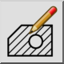
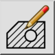
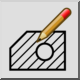
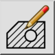

Editar rayado
Barra de herramienta / icono:
 

Menú: Modificar > Editar rayado
Acceso directo: M, H
Comandos: edithatch | modifyhatch | mh
Esta es una traducción automática.
Barra de herramienta / icono:
 

Menú: Modificar > Editar rayado
Acceso directo: M, H
Comandos: edithatch | modifyhatch | mh
Esta herramienta se puede utilizar para editar entidades de sombreado existentes.
Tenga en cuenta que en lugar de utilizar esta herramienta, también puede hacer doble clic en la entidad de sombreado que desee editar.